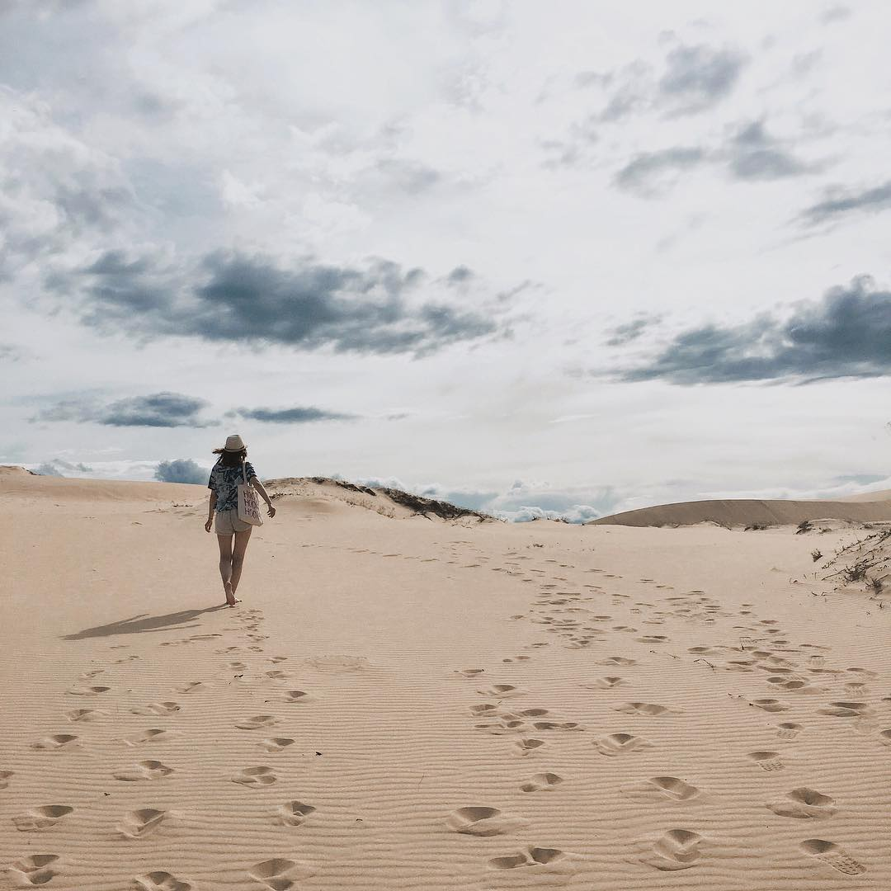

Đến Quảng Bình chắn chắn bạn phải khám vườn quốc gia Phong Nha Kẻ Bàng, tắm biển Nhật Lệ, Đá Nhảy…và đừng quên đến Cồn Cát Quang Phú để trải nghiệm cảm giác lạc vào sa mạc. Bạn sẻ cảm nhận được cái nắng cái gió của mảnh đất Quảng Bình như trong câu thơ “Chang Chang Cồn Cát nắng trưa Quảng Bình” của nhà thơ Tố Hữu.
Cồn cát Quang Phú nằm ở xã Quang Phú, cách trung tâm thành phố Đồng Hới khoảng 8 km. Để đến nơi đây, bạn cứ chạy thẳng theo đường Trương Pháp qua bãi biển Nhật Lệ, chạy thêm một đoạn có ngã ba rẻ bên trái là đến. Cồn cát Quang Phú điểm đến mà bạn nhất định phải đến nếu có dịp du lịch Quảng Bình. Cồn cát vẫn còn nguyên vẻ hoang sơ, về cảnh quan, môi trường chưa bị tác động bởi con người. Bạn hãy đến đây trải nghiệm cảm giác đi lạc vào sa mạc, chơi trượt cát vô cùng thú vị hay đi bộ ngắm nhìn đồi cát, tận hưởng không khi trong lành và chụp lại những bức ảnh tuyệt vời.
Bạn hãy đến Cồn Cát Quang Phú để trải nghiệm cảm giác đi lạc vào sa mạc
Khi đặt chân đến đồi cát Quang Phú, ấn tượng đầu tiên bạn có thể thấy là đồi cát trắng soi nắng pha lê với những trảng cát trắng chạy dài đến sát bờ biển xanh. Đến đây bạn có thể bắt đầu hành trình chinh phục những đồi cát có độ cao gần 100m, đôi chỗ được điểm màu xanh của bụi cây dại, màu nâu trầm của những cành cây khô hoang sơ tĩnh lặng, mà chẳng kém phần quyến rũ.
Đôi chỗ được điểm màu xanh của bụi cây dại
Cồn cát Quang Phú có điểm đặc biệt hấp dẫn du khách là không chỉ vân cát được thay đổi hình dạng hàng ngày, hàng giờ bởi gió biển phiêu bồng thổi suốt ngày đêm mà màu sắc của cát cũng được thay đổi từng giờ. Ban ngày khi nắng lên bạn sẽ thấy cát trắng tinh, mịn màng nhưng khi có nắng, cát ánh lên màu vàng rực, đến xẩm tối lại có màu xám trắng.
Nếu so với đồi cát Trắng đồi cát Đỏ của Mũi Né, cồn cát Quang Phú mang một dáng vẻ khác hẳn bởi nó nằm bên bờ biển, không gian thoáng đãng. Cát ở đây có màu trắng như đồi cát Trắng Mũi Né nhưng hơi ngả vàng.
Những đồi cát có độ cao gần 100m
Các vụng cát tuy không dốc mạnh như đồi cát Đỏ nhưng chiều dài thì thật đáng kể bởi cứ đi dọc mãi cũng không hết, chứ không bó hẹp trong một phạm vi nhỏ như đồi cát đỏ của Mũi Né.
Với những đồi cát cao, dốc, đến cồn cát Quang Phú bạn có thể chơi trò trượt cát rất thú vị. Trò trượt cát này thích hợp cho tất cả mọi người như một trò chơi để thư giãn thoải mái mang lại tiếng cười cho gia đình, bạn bè. Dịch vụ cho thuê ván trượt cát tuy chưa phổ biến ở đây nhưng bạn hoàn toàn có thể yên tâm về chất lượng cũng như độ an toàn khi vui chơi ở đây nhé.
Cồn cát Quang Phú còn là nơi lí tưởng để sáng tạo những shoot ảnh độc đáo. Với bầu trời cao xanh trong và triền cát dài rộng, đôi lúc những cơn gió nhẹ mang theo những hạt cát bay. Từ phong cách cool ngầu cho đến buồn man mác đều không là vấn đề gì đối với cồn cát Quang Phú Quảng Bình nhé! Một nơi đặc biệt như vậy đích thị là 1 địa điểm lý tưởng cho các bạn những bức ảnh để đời rồi, đúng không? Những bức ảnh hòa mình cùng thiên nhiên, đi trên thiên đường cát sẽ là những kỉ niệm đáng nhớ, tuyệt vời nhất. Phải nói, đồi cát Quang Phú luôn có nét thu hút kỳ lạ, khiến ta cứ mãi dùng dằng, chẳng muốn rời đi.
Thời điểm thích hợp nhất để du khách tham quan đồi cát Quang Phú là sáng sớm hoặc chiều tối. Nếu bạn đi vào sáng sớm đứng trên đồi cát này, bạn sẽ nhìn thấy bình minh lên từ phía biển. Nếu bạn đi vào chiều muộn, bạn sẽ gặp hoàng hôn lặn phía sau đồi cát, dưới các dãy núi xa xa mỗi thời điểm lại có vẻ đẹp khách nhau. Hạn chế đến đồi cát vào buổi trưa vì lúc này do ảnh hưởng của ánh nắng mặt trời, cát khá nóng và có thể gây bỏng chân người tham quan.
Sau khi tham quan vui chơi ở Cồn Cát bạn củng đừng quên tắm biển Quảng Phú ở gần đó và thưởng thức các món hải sản thơm ngon.